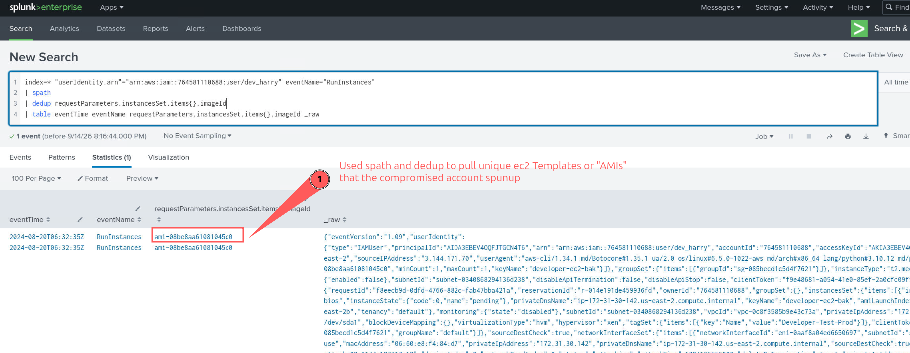
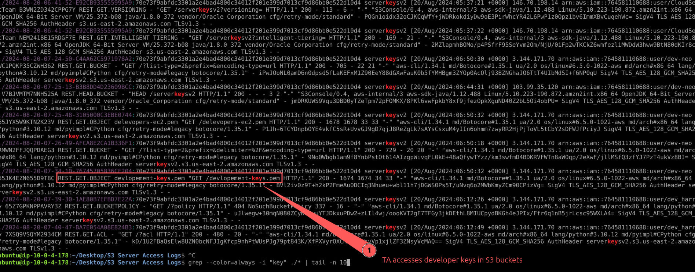
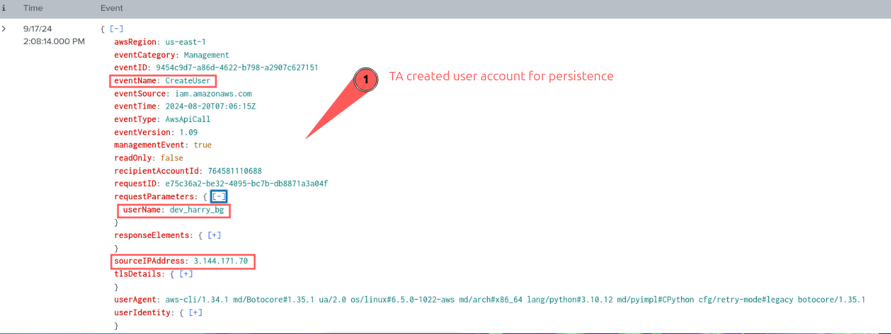

// BLUE TEAM LABS ONLINE · WRITEUP
AWeSome
Executive Summary & Overview
This writeup details the investigation into an AWS infrastructure breach at SecureNetDynamics. An attacker exploited exposed AWS access keys belonging to a developer, dev_harry, to gain initial access. The adversary then performed extensive enumeration, extracted sensitive keys from S3, established persistence through new user accounts and privilege escalation, and ultimately launched a ransomware attack, encrypting critical files. The incident response focused on analyzing Splunk CloudTrail logs and system artifacts to reconstruct the attack chain, identify compromised resources, and pinpoint attacker actions and indicators of compromise.
Asset Information
| Hostname / Identifier | Summary |
|---|---|
| arn:aws:iam::764581110688:user/dev_harry | Initial compromised AWS IAM user due to exposed access keys. |
| arn:aws:iam::764581110688:user/dev-neo | Compromised console login user, used for privilege escalation and persistence. Source IP: 103.99.35.120. |
| dev_harry_bg | Newly created user by attacker, added to dev_group for persistence. |
| dev_group | Newly created group by attacker, used to grant administrative access to dev_harry_bg. |
Indicators of Compromise (IOC) Matrix
| Type | Summary | MITRE ATT&CK Code |
|---|---|---|
| AWS API Call Enumeration | Compromised user dev_harry ran GetCallerIdentity API with user agent BOTO. |
T1526 |
| Resource Creation | Compromised user dev_harry ran RunInstances with IP 172.31.30.142 and AMI ID ami-08be8aa61081045c0. |
T1578.002 |
| Degrade Security | Compromised account dev_harry modified security group rules to allow public access. |
T1562.007 |
| Lateral Movement | User dev-neo signed in from IP 103.99.35.120. |
T1078.004 |
| Privilege Escalation | User dev-neo assigned administrator access policy arn:aws:iam::aws:policy/AdministratorAccess. |
T1098.003 |
| Persistence (Credential Creation) | Attacker's IP created new user dev_harry_bg and added to dev_group. |
T1098.001 |
Step-by-Step Investigation Workflow
The investigation primarily leveraged Splunk to analyze AWS CloudTrail logs (cloudtrail-awesome.json) to trace the attacker's activities.
1. Identify initial successful activity from compromised user dev_harry.
index=* "userIdentity.arn"="arn:aws:iam::764581110688:user/dev_harry"
| where isnull(errorCode)
| sort + eventTime2. Determine the source IP address associated with the initial activities.
index=* "userIdentity.arn"="arn:aws:iam::764581110688:user/dev_harry"
| where isnull(errorCode)
| table sourceIPAddress3. Discover AMI used by the attacker to create EC2 instances.
index=* "userIdentity.arn"="arn:aws:iam::764581110688:user/dev_harry" eventName="RunInstances"
| spath
| dedup requestParameters.instancesSet.items{}.imageId
| table eventTime eventName requestParameters.instancesSet.items{}.imageId _raw4. Identify security group modified by the attacker to allow public access.
index=* eventName IN ("*ModifySecurityGroupRules*", "ModifySecurityGroupIngress", "AuthorizeSecurityGroupIngress")5. Find the username of the console login credentials discovered by the attacker.
index=* source="cloudtrail-awesome.json" eventName=GetLoginProfile6. Determine the source IP address of the compromised console login.
index=* source="cloudtrail-awesome.json" "userIdentity.arn"="arn:aws:iam::764581110688:user/dev-neo" eventName=ConsoleLogin7. Identify the policy attached to escalate privileges for the compromised user dev-neo.
index=* source="cloudtrail-awesome.json" "userIdentity.arn"="arn:aws:iam::764581110688:user/dev-neo" eventName IN ("AssumeRole", "AttachUserPolicy", "PutUserPolicy")8. Find the critical file downloaded from S3 by the attacker.
grep --color=always -i "key" ./* | tail -n 109. Identify the username and groupname created by the attacker for persistence.
index=* source="cloudtrail-awesome.json" "userIdentity.arn"="arn:aws:iam::764581110688:user/dev-neo" eventName="CreateUser"
index=* source="cloudtrail-awesome.json" "dev_harry_bg" eventName=AddUserToGroup10. Determine the source of the ransomware script downloaded to an instance.
*(This step involved analyzing artifacts from the Instance.zip, specifically the user's bash history.)*
Question & Answer Solutions
1. When was the first successful activity seen from the compromised AWS User as per logs? (Format: YYYY-MM-DD HH:MM:SS UTC)
2024-08-20 06:00:10 UTC
Reasoning: Filtered for dev_harry's ARN, excluded errors, and sorted by eventTime.
2. What was the Source IP address associated with the activities? (Format: IP Address)
3.144.171.70
Reasoning: Extracted sourceIPAddress from the initial successful events.
3. The attacker performed further enumeration and found an AMI image that the compromised user had access to. This AMI was used to create EC2 Instances. Find the AMI-ID. (Format: AMI-ID)
ami-08be8aa61081045c0
Reasoning: Used spath and dedup on RunInstances events to extract the imageId.

4. The attacker changed the ingress rule of a security group, allowing everyone to connect through any port. Find this Security Group ID. (Format: Security Group ID)
sg-085becd1c5d4f7621
Reasoning: Searched for security group modification events like ModifySecurityGroupIngress.
5. Attacker after further enumeration found the Console Login credentials of a user. What is the name of the user? (Format: Username)
dev-neo
Reasoning: Identified the user associated with GetLoginProfile events.
6. From which IP was this login originated? (Format: IP Address)
103.99.35.120
Reasoning: Filtered ConsoleLogin events for user dev-neo and extracted the sourceIPAddress.
7. What policy was attached to escalate access for this compromised user? (Format: Policy ARN)
arn:aws:iam::aws:policy/AdministratorAccess
Reasoning: Searched for policy attachment events (AttachUserPolicy) for user dev-neo.
8. The attacker downloaded a critical file from S3 Bucket using which an important instance can be accessed. What is the name of the File? (Format: Filename.extension)
devlopement-keys.pem
Reasoning: Used grep to find key-related files, revealing the downloaded PEM key.

9. For more stealth access in the environment, the attackers created a user and a group with Administrative access. Find the username and groupname. (Format: Username, Groupname)
dev_harry_bg, dev_group
Reasoning: Identified CreateUser and AddUserToGroup events by the attacker.

10. The attacker got access to an Instance and a Ransomware Script was downloaded in it. Using the given Instance.zip as an artifact, identify the IP and port from where the file was downloaded. (Format: IP:Port/File.extension)
3.144.171.70:8080/a.py
Reasoning: Analyzed the user's bash history within the provided Instance.zip artifact.
Key Takeaways & Security Insights
- Secure Credential Management: The initial breach highlights the critical importance of never embedding sensitive credentials like AWS access keys directly into source code. Implement secrets management solutions (e.g., AWS Secrets Manager, HashiCorp Vault) and enforce least privilege.
- Proactive Monitoring: Comprehensive logging (AWS CloudTrail, VPC Flow Logs) and a robust SIEM solution like Splunk are essential for detecting anomalous activities early in the attack chain.
-
Behavioral Analytics: Monitoring for unusual API calls (e.g.,
GetCallerIdentityfrom new IPs), console logins from suspicious locations, or rapid changes to security group rules can indicate compromise. -
Privilege Escalation Detection: Alerts for events like
AttachUserPolicyorCreateUser/AddUserToGroupwith administrative privileges are crucial for identifying persistence and privilege escalation attempts. -
Incident Response Preparedness: Having a well-defined incident response plan, including forensic artifact collection (like
Instance.zipfor host-level analysis), is vital for effective post-compromise investigation. - Supply Chain Security: Even internal development practices can introduce vulnerabilities. Regular code reviews and automated static analysis tools can help identify exposed secrets before deployment.